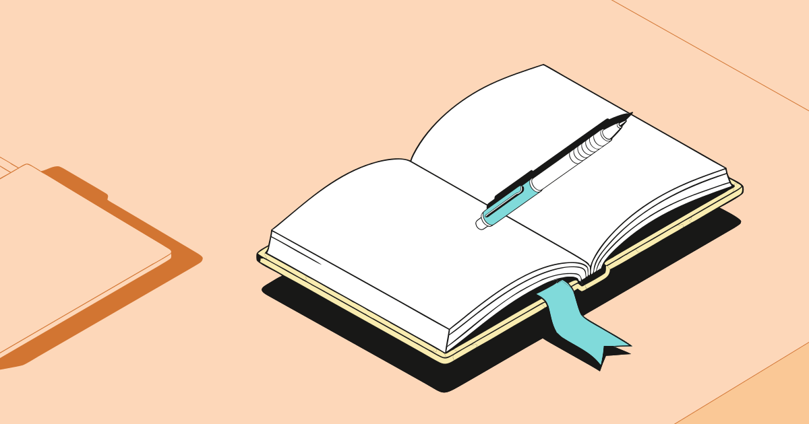

01
Любит писать
- Главные
- Открытая книга, Ручка
- Окружение
- Папка
Свежий ответ Gemini: состав, связи и размещение. Движок проверил допустимые опоры и пересечения.

Персиковая · набор S

Идея и принцип расстановки
- Главная группа объединяет раскрытую книгу как основу для записей и ручку как главный инструмент письма.
- Папка выбрана в качестве фонового компаньона для создания аккуратного делового контекста и порядка на рабочем столе.
- Композиция выстроена компактно с сохранением естественных опор и читаемости предметов.
Горизонтальное размещение с папки слева и группой книги справа